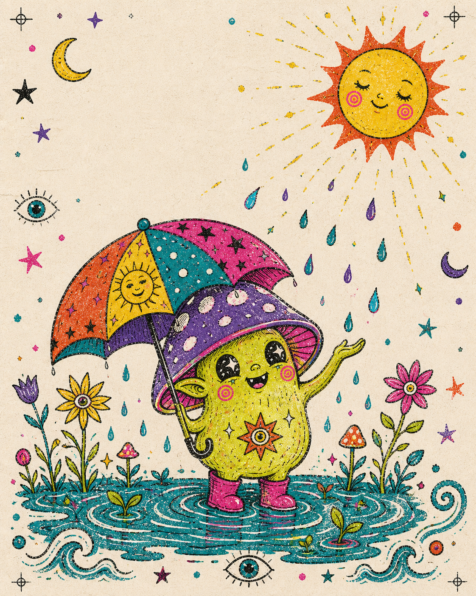

arrive before you interpret
You are already in it
“Exist first. Explain later.”
open the field guide
The Weather Is Participating. A pocket field guide for hard weeks, mixed skies, and the fantastically absurd fact of being here.
Before the mind turns this moment into a project, notice that it has already begun without permission. Your breathing is breathing. The room is rooming. You are not outside life trying to earn admission. You are one of the ways life is happening.
Tiny practice: Name three colors. Feel two points of contact. Let one breath finish itself.
the weather page
Both belong
“A storm is not a failure of the sky.”
why both?
Rain is not sunshine doing badly. It is another way the sky participates. Things drink. Roots loosen. Air changes. Only sun scorches; only rain floods. A living week can contain both. Neither cancels the other. Both are welcome at the table.
the wave page
Nothing to solve
let the wave speak
“You do not need to solve the wave.”
A wave does not have to understand water before it rises. It is water taking a shape for a while. You may be less like a fixed little pilot and more like life doing this particular wobble. There is nothing to solve in order to belong to the sea.
Tiny practice: Unclench one thing you did not know you were clenching.
the rest page
Pause participates
“Rest is also a way of participating in reality.”
a soft footnote
The pause is not outside the music. The empty bowl is not failing to be useful. A field is not unemployed in winter. Rest does not need to justify itself by improving tomorrow.
take one unproductive breath
Stay open for one slow cycle. Inhale without collecting evidence. Exhale and let the room hold some of you.
the shape page
Stay by changing
“The ocean keeps going by not staying one shape.”
follow the snail trail
Continuity is not sameness. The river remains itself by changing. You are allowed to be a process with no final logo, a sentence still revising its own grammar, a very small creature with unclear weather.
Pocket question: What if this version of you is a verb?
the absurdity page
Be a creature
“Be a little creature about it.”
the serious bit
The universe has invented beetles, knees, marmalade, gravity, and the noise a spoon makes in a mug. Delight is not evidence that you have misunderstood the seriousness of things. It is one of the things seriousness is for.
the motion page
Still moving
at moss speed
“You are not behind; you are in motion.”
There is no cosmic conveyor belt you missed. There is this pace, this body, this week. Moss is not late to become forest. A tide does not apologize to the calendar.
Pocket note: Slow still moves. Paused still belongs.
a closing note for the pocket
Existing is the point
“This is not rehearsal for being alive.”
open the reminder pouch
You are allowed to have no lesson yet.
The strange part still belongs to the whole.
Pause, tiny creature. The universe can hold for a moment.
A difficult hour is not a defective life.
Existing counts before it becomes useful.
Your current shape is permitted.
The sky can carry more than one kind of weather.
Delight is a valid way to notice reality.
one last thought
You do not have to convert your life into a conclusion before it is allowed to count. Being here is not preparation for the real event. This is the real event: strange, tender, inconvenient, sparkling.
The guided text in this zine is original writing, Watts-ish in spirit, and not a quotation or attribution. Made in the Riso Goblin Zine lane for ACIDGOBLIN.
Use the links, arrow keys, space bar, swipe, or simply scroll. Quiet the ink whenever the page feels too loud.